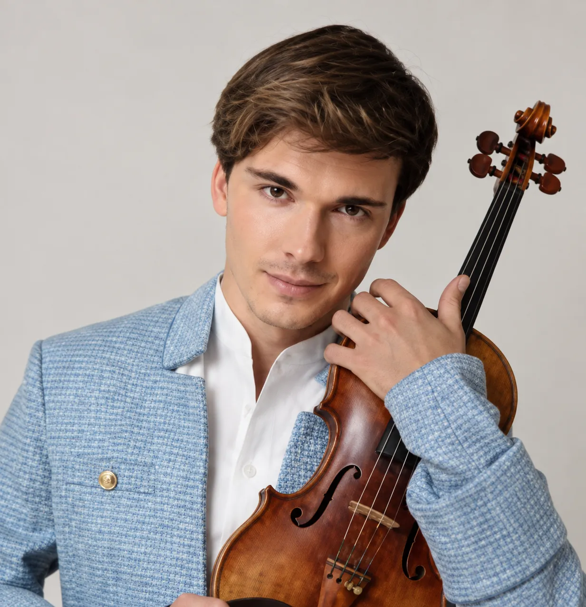
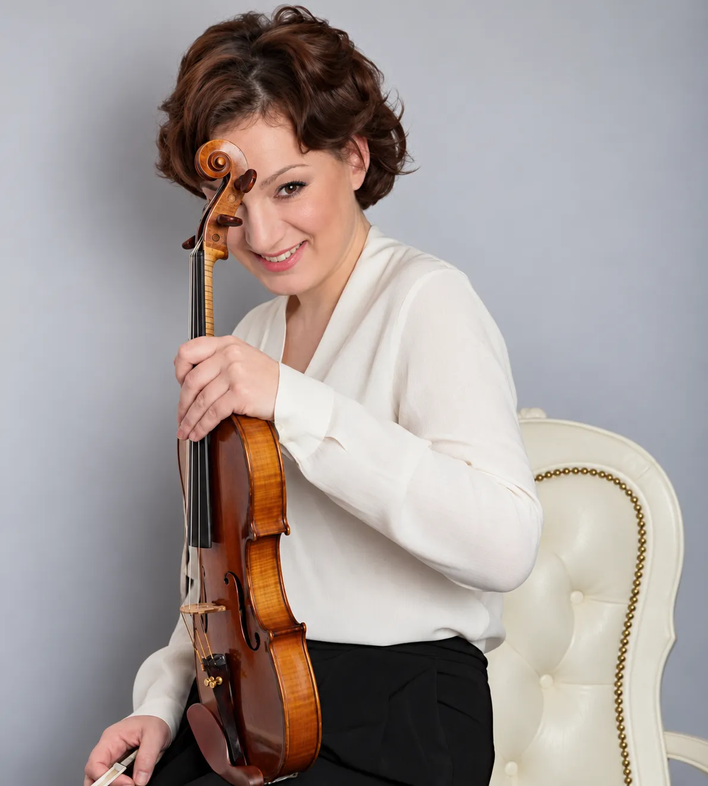
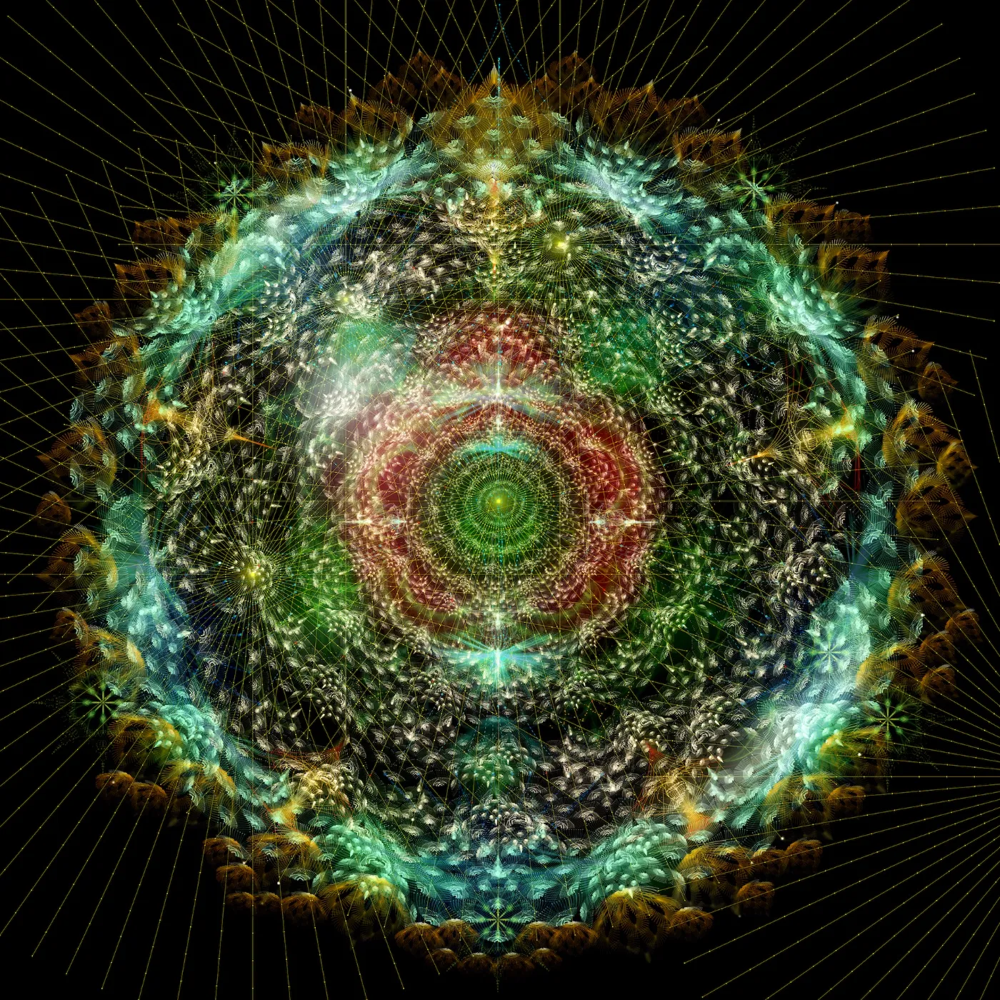
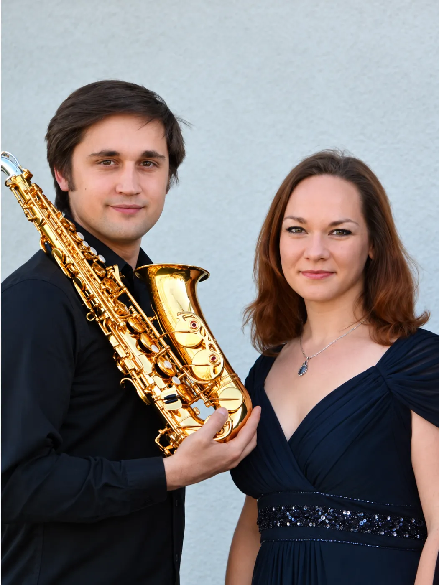
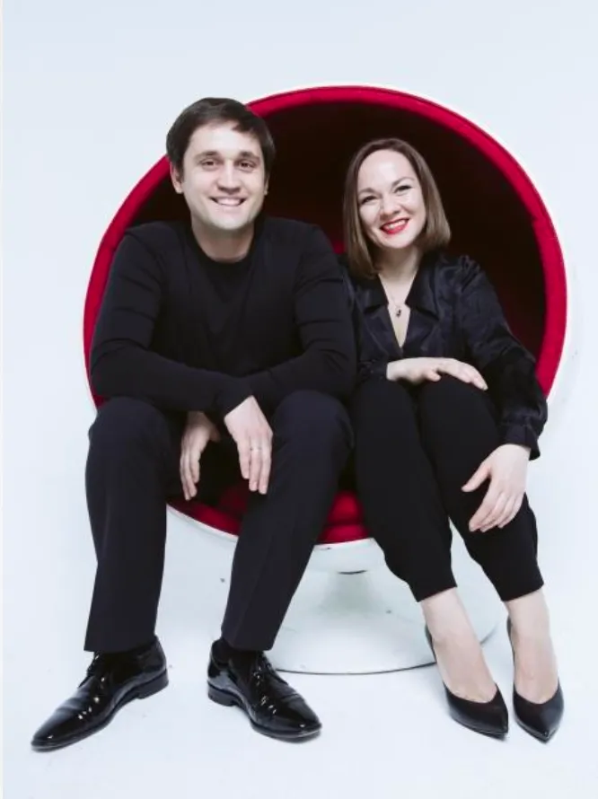
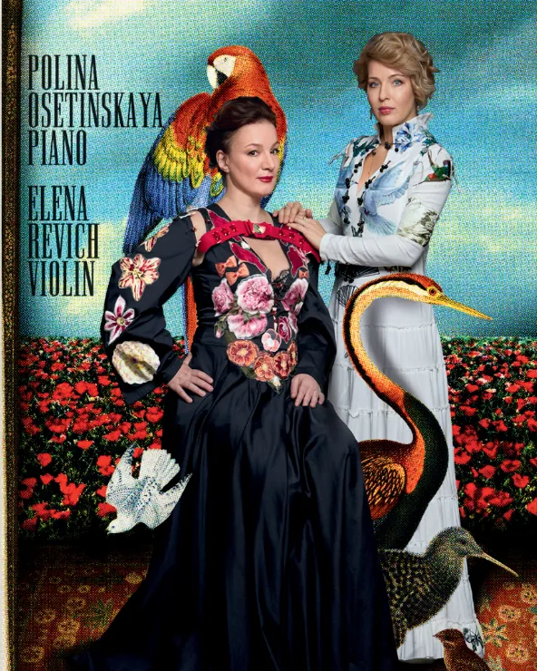

01 · Violin & piano
The Music
The Music
of Cinema
Iconic melodies and cinematic stories, told through violin and piano.
ChaplinGershwinNino RotaDrezhninGardel
I graduated as a professional violinist before building a career as a producer and project manager. With experience in large-scale international events, I combine an artistic perspective with strong organizational skills to bring ambitious projects to life.
Get in touchLive performances informed by neuroscience research
NeuroMusic explores the connection between music, the mind and the way we listen. Bringing live performance into dialogue with neuroscience, the project invites a deeper awareness of mental wellbeing, hearing and our everyday sound environment.

Stradivari violinist, composer, ECHO Klassik and ICMA winner
Yury has performed at Carnegie Hall, the Vienna Musikverein and La Scala, with recordings featured in Netflix’s Bridgerton. Founder of Festival Nights and Honorary Representative of UNICEF Austria, he brings together music, visual art and social initiatives.

Violinist, diploma winner of the International Tchaikovsky Competition
Elena is an internationally acclaimed violinist and the author of interdisciplinary projects that have received prestigious awards, including the Golden Mask. Elena developed the NeuroMusic approach in dialogue with neuroscientists, exploring how music shapes perception, emotion and attention.

NeuroMusic was developed with the participation of the internationally renowned visual artist Tatiana Plakhova.
Complex graphics accompany the live performance, offering a visual interpretation of the musical and scientific concepts explored throughout the programme.
Programmes can be developed
around four listening states
Pianist Maria Nemtsova and saxophonist Vitaly Vatulya perform together as VitaDuo, exploring new music and arrangements for saxophone and piano.
Their performances have taken them to more than 50 cities, including Moscow, Tel Aviv, Prague, Tbilisi, Vienna and Belgrade, and to festivals such as Slavic Spring in Prague, SaxArte in Italy and Autumn in Carthage in Tunis.
They also co-founded Music for Peace, a charitable project that brings concerts and masterclasses to communities affected by conflict and supports young musicians in these regions.
“The duo plunges the audience into shock with their virtuosity, ensemble quality and a breath for two”


Iconic melodies and cinematic stories, told through violin and piano.
A colourful world of lyrical miniatures, imagination and musical storytelling.

Concertgebouw Amsterdam · Carnegie Hall · Philharmonie Luxembourg
{{ p }}
Over 25 years, Amstel Quartet has set a new standard for the saxophone quartet and explored the instrument across its full range.
Four saxophones, a distinctive ensemble sound and an adventurous repertoire. The quartet collaborates with contemporary composers and creates original arrangements.
“If you dare to capture the essence of Wagner's Ring in 20 minutes you are either completely crazy, or just genius”
{{ pr.desc }}
Composers{{ pr.composers }}